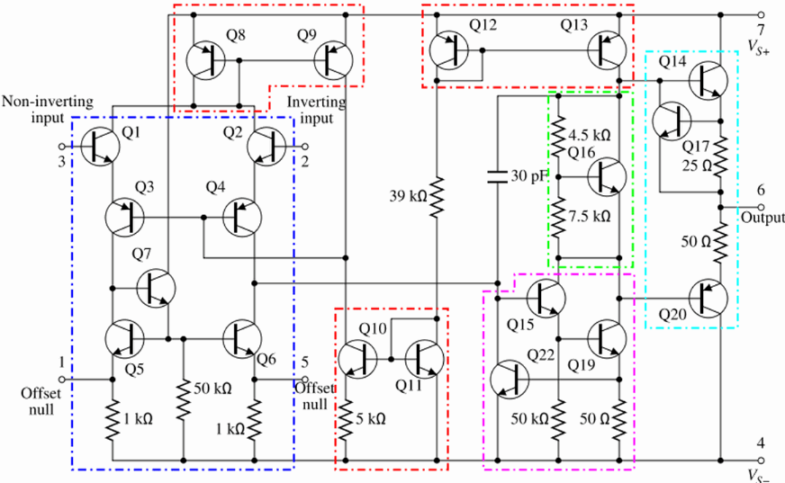
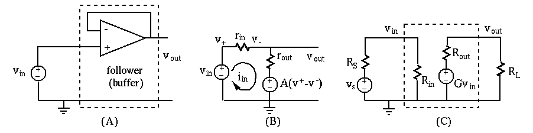
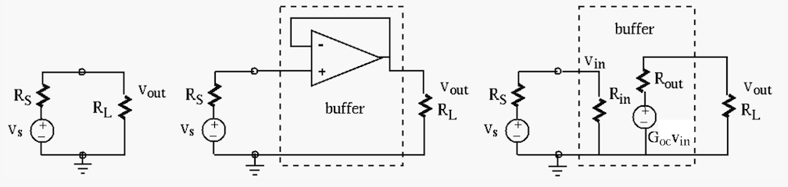
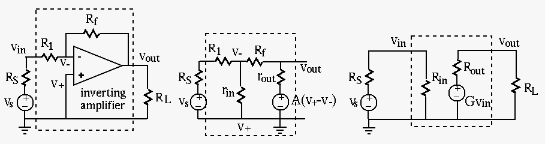
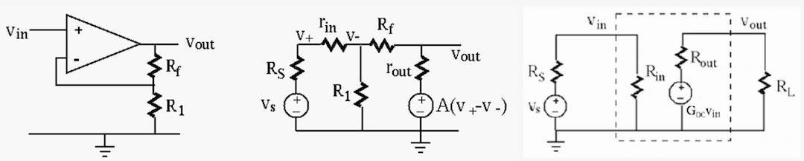

Next: Analysis of Op-Amp Circuits Up: Chapter 5: Operational Amplifiers Previous: Chapter 5: Operational Amplifiers
The circuit schematic of the typical 741 op-amp is shown below:

A component-level diagram of the common 741 op-amp. Dotted lines outline:
Like all op-amps, the circuit basically consists of three stages:
Although the op-amp circuit may look complicated, the analysis of its operation and behaviors can be simplfied based on the following assumptions:
 can be treated as infinity
.
can be treated as infinity
.
 is not affected by the load
is not affected by the load  (so long as it is
much greater than ).
(so long as it is
much greater than ).
Based on these approximations, an op-amp can be modeled in terms of the following three parameters:

 :, based on both the inverting input
:, based on both the inverting input  and the non-inverting input :
and the non-inverting input :
| (1) |
| (2) |
Also, as the output is in the range between and and is large, is small (in the micro-volt range), i.e., . If, as in some op-amp circuits, is grounded, then is very close to zero, i.e., it is almost the same as ground, or virtual ground. The analysis of various op-amp circuits can be much simplified by this virtual ground assumption.
As is large,
is usually saturated, equal to either
or (called the “rails”), depending on whether or not
is greater than . For to be meaningful, some kind of
negative feedback is needed. In the following, we consider some typical
op-amp circuits to show how to analyze an Op-amp circuit to find its input
resistance , output resistance  , and open-circuit voltage
gain .
, and open-circuit voltage
gain .
, output impedance
and voltage gain , as shown in (B). Then the voltage follower
can be modeled by its input impedance , output impedance ,
and voltage gain , as shown in (C).

Specifically, , and can be found below. Here
the voltage source in the op-amp is
.
Applying KVL to the loop we get
| (3) |
| (4) |
The open-circuit output voltage is
| (5) |
| (6) |
 . We therefore have
. We therefore have
| (7) |
With a short-circuit load , we have , and the short-circuit current can be found by superposition:
| (8) |
| (9) |
In summary, the voltage follower has a unit voltage gain, but much increased input resistance (e.g., ) and much reduced output resistance (e.g., ). In practice we could simply assume and .
Example:

The figure on the left shows a circuit represented by an ideal voltage
source  in series with an internal resistance (Thevenin's
theorem), with a load . The voltage delivered to the load by
this non-ideal source is
in series with an internal resistance (Thevenin's
theorem), with a load . The voltage delivered to the load by
this non-ideal source is
| (10) |
.
In the middle figure, a voltage follower (as a buffer) is inserted in
between the source and the load. The follower is modeled by its input
and output resistances and , as well as its voltage
gain , as shown in the right figure. The output voltage can be
obtained after two levels of voltage dividers:
| (11) |
| (12) |

As the analysis of the circuit using full model of the op-amp is very involved, certain approximation is made to simplify the analysis.
As and , we approximate and . Also, we have , and . Now we have
| (13) |
| (14) |
| (15) |
| (16) |
.
This result can also be obtained under the virtual ground assumption
. Applying KCL at the node of , we get
| i.e. | (17) |
We assume  , and find the input resistance as the
ratio of and the input current . By KCL applied to
the node of :
, and find the input resistance as the
ratio of and the input current . By KCL applied to
the node of :
| (18) |
:
| (19) |
 |
|||
|
(20) |
| (21) |
| (22) |
| (23) |
we get
| (24) |
we get
| (25) |
 |
|
||
|
(26) |
|
|||
 |
(27) |
and
.
In summary,
| (28) |
| (29) |
| (30) |

The three parameters of this non-inverting amplifier can be found to be (see here):
| (31) |
| (32) |
| (33) |
. In particular if  , this non-inverting amplifier
becomes a voltage follower with ,
, and
.
, this non-inverting amplifier
becomes a voltage follower with ,
, and
.